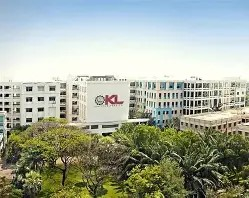

Welcome to KL University — a global destination for quality education and innovation. Located in the serene Green Fields of Andhra Pradesh, KL University offers a vibrant campus environment equipped with world-class infrastructure, modern laboratories, digital libraries, and advanced learning facilities. We are committed to shaping future-ready graduates with strong technical, managerial, and creative skills. At KL University, students experience a blend of academic excellence, research-driven learning, industry collaboration, and a holistic campus life filled with clubs, sports, and cultural events. With diverse programmes across Engineering, Management, Sciences, Pharmacy, Law, and Humanities, we empower learners to discover their passion and build careers that make an impact.
KL University offers a wide range of academic and student support services designed to enhance every learner’s educational journey. From well-structured undergraduate and postgraduate programmes to world-class research opportunities, students gain hands-on practical exposure through industry partnerships, internships, and innovation labs. Our curriculum is continuously updated to match global standards and real-world needs. Beyond academics, we provide strong campus services including career guidance, placement training, modern hostels, sports facilities, health and wellness support, and dedicated mentorship programs. With a focus on holistic development, KL University ensures that every student receives the right resources and support to excel in their studies, build confidence, and achieve their career goals.
welcome to the kl university
KL University (Koneru Lakshmaiah Education Foundation) is a premier institution dedicated to delivering excellence in higher education, research, and innovation. Established with a mission to empower students with knowledge and industry-ready skills, the university offers diverse academic programs in Engineering, Management, Sciences, Pharmacy, Law, Architecture, and Humanities. With a focus on modern teaching methods, experienced faculty, and advanced laboratories, KL University ensures that students gain both strong theoretical understanding and practical expertise. The university’s lush Green Fields campus in Andhra Pradesh provides a vibrant environment that supports holistic growth. Students here enjoy a well-rounded learning experience that includes academic support, innovation centers, sports, cultural activities, and personal development opportunities. KL University’s strong industry connections, dynamic placement training, and research initiatives help students transform their ideas into impactful careers and contribute meaningfully to society.